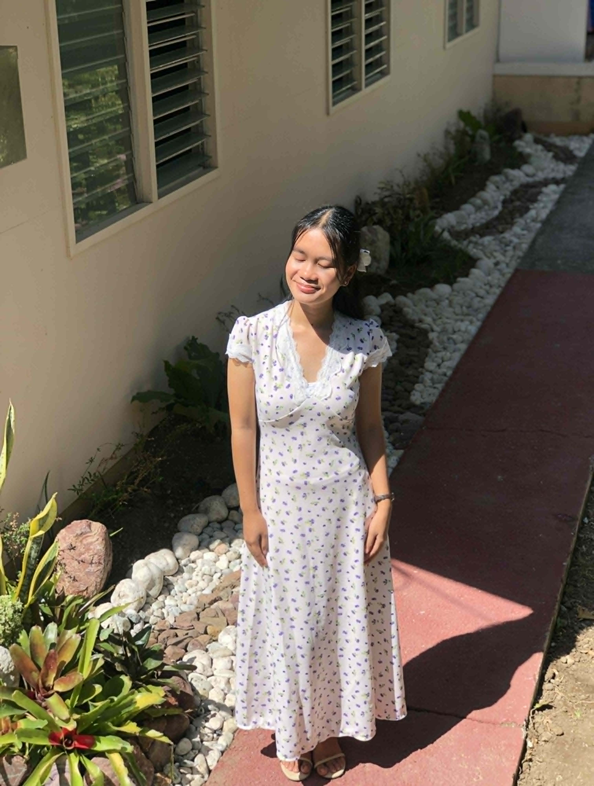

Emy Ellaine B. Ciupan
BSOA 2-A Student
Just a simple girl who enjoys peaceful moments, cute things, music, and making memories 💖
Welcome to My Little Space !
Objectives
A highly motivated fresh graduate seeking to apply my knowledge in office administration, along with my dedication, adaptability, and strong organizational abilities,
in contributing to a productive and well-structured workplace while gaining valuable professional experience.
Skills
౨ৎ Professional
- Office Management and Organization
- Record keeping and document filing
- Data entry and basic bookkeeping
- Microsoft office skills (Word, Excel, Powerpoint)
- Scheduling and calendar management
- Basic report writing
- Time management and task coordination
౨ৎ Personal
- Detail-oriented
- Organized and neat in work
- Willingness to learn and improve
- Honest and professional
- Reliable
- Emotionally aware
- Creative
Seminar & Trainings
March 14, 2026 | English for Business and Entrepreneurship
March 06, 2026 | Receiving and Responding to Workplace Communication
February 28, 2026 | Participating in Workplace Communication
January 09, 2026 | Seminar on Work Ethics (With Orientation on Table Manners and Etiquette)
December 18, 2025 | Redefining Human through Artificial Intelligence: Opportunities, Challenges, and Creative Innovation
November 29, 2025 | pangUna sa Asembleya: A Training Workshop on Parliamentary Procedures
October 04, 2025 | International Academic Lecture Series: A Prologue to the 2026 International Hybrid Conference on International Studies
June 29, 2019 | Basic Office Application Software (MS Word, Excel and Powerpoint)